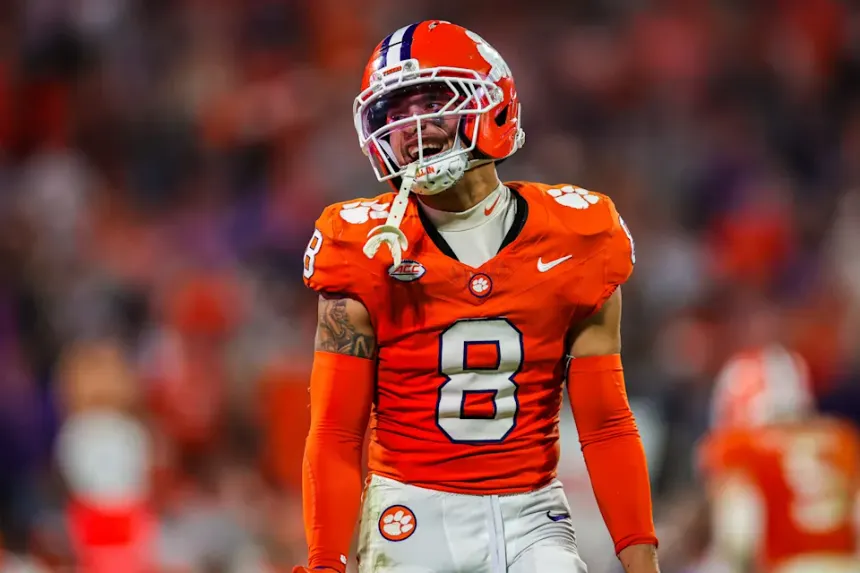
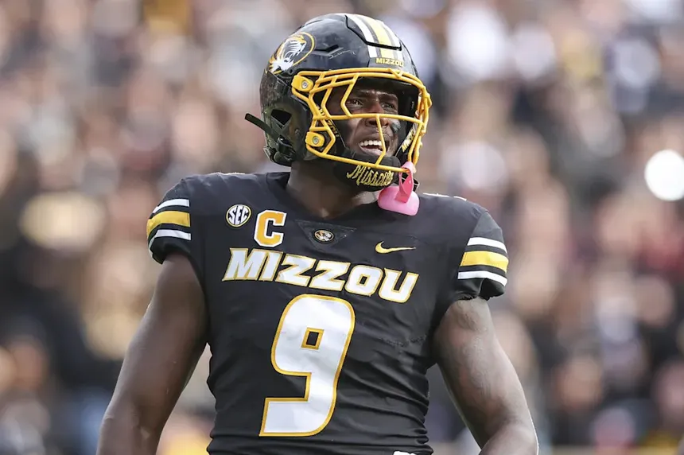
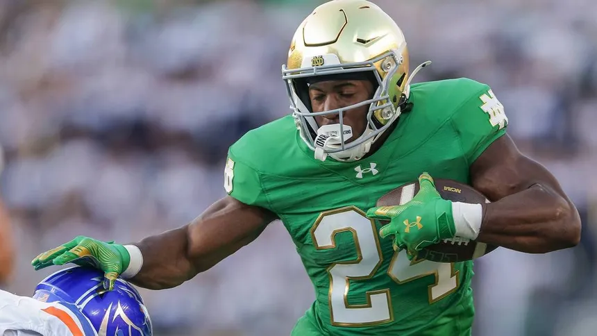
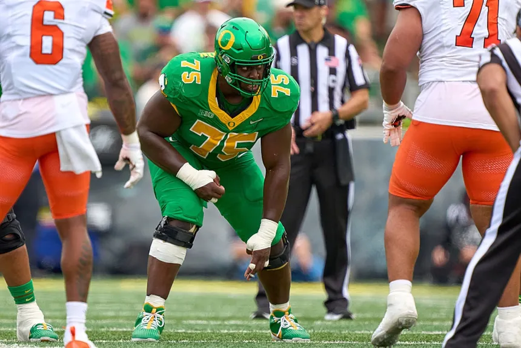

Draft Prospects
CB Avieon Terrell - A lot like his older brother, a violent playmaker who forced 8 fumbles in his college career.

ED Zion Young - A twitched up relentless pass rusher, who can set the edge.

RB Jadarian Price - The perfect number 2 back, brings a little bit of everything.

OG Emmanuel Pregnon - Athletic testing freak and reliable run blocking guard.

2026 Draft Picks
Round 1 Pick 32
Round 2 Pick 64
Round 3 Pick 96
Round 6 Pick 188
2025 draft picks
Round 1 Pick 18 OG Grey Zabel North Dakota State
Round 2 Pick 35 S Nick Emmanwori South Carolina
Round 2 Pick 50 TE Elijah Arroyo Miami
Round 3 Pick 92 QB Jalen Milroe Alabama
Round 5 Pick 142 DT Rylie Mills Notre Dame
Round 5 Pick 166 WR Tory Horton Colorado State
Round 5 Pick 175 FB Robbie Ouzts Alabama
Round 6 Pick 192 OG Bryce Cabeldue Kansas
Round 7 Pick 223 RB Damien Martinez Miami
Round 7 Pick 234 OT Mason Richman Iowa
Round 7 Pick 238 WR Ricky White III UNLV